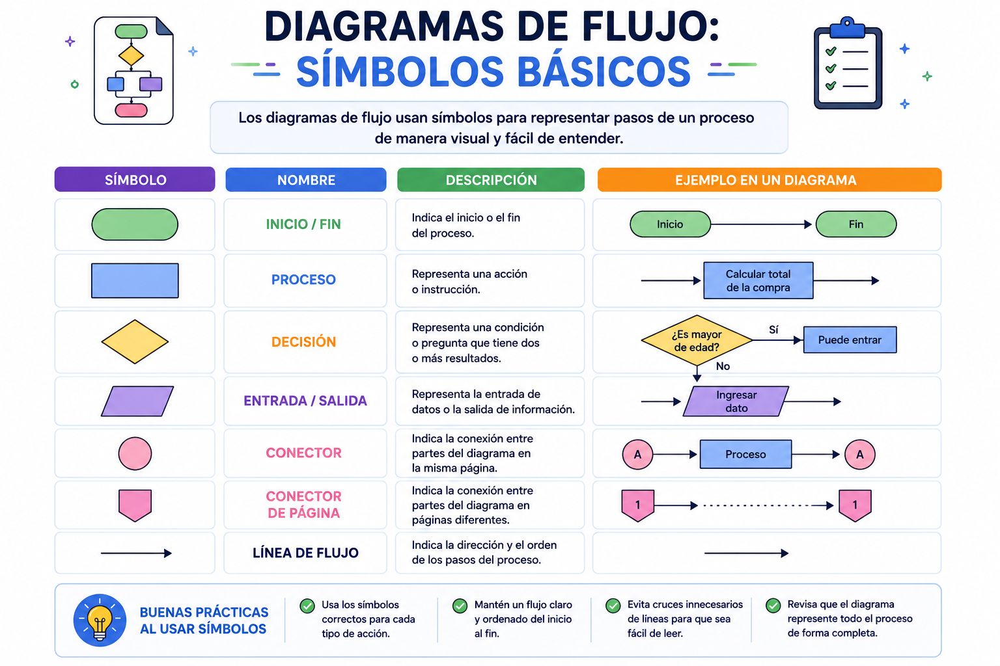

Cuando trabajas en un equipo de desarrollo de software con ingenieros de diferentes países, el código escrito en un lenguaje específico puede ser difícil de interpretar a primera vista. Para resolver esto, los programadores utilizan planos universales llamados diagramas de flujo. Al igual que un arquitecto usa símbolos estandarizados para diseñar una casa, un programador dibuja bloques específicos para que cualquier persona en el mundo entienda exactamente cómo fluyen los datos y dónde se toman las decisiones en el sistema.
⚠️ Debes visualizar el video completo sin adelantar para desbloquear la evaluación.
Material audiovisual adaptado con fines estrictamente educativos. Créditos del autor: LearnFree en Español.

Un diagrama de flujo es la representación gráfica de un algoritmo. Utiliza una simbología geométrica estandarizada (normalizada por organizaciones como ANSI e ISO) donde cada forma tiene un significado lógico exclusivo. Las líneas de flujo interconectan estos símbolos para indicar la secuencia exacta en la que se deben ejecutar las instrucciones, permitiendo visualizar la estructura del programa de manera rápida y sin ambigüedades.
Si necesitas representar una operación matemática compleja (como calcular el IVA), ¿qué símbolo geométrico debes emplear?
¿Cuál es el propósito obligatorio del símbolo con forma de óvalo (terminal) dentro de un diagrama de flujo estructurado?
Cuando un algoritmo requiere que el usuario digite su contraseña desde el teclado, esta acción de captura se grafica con un:
¿Cuáles son las dos organizaciones internacionales que normalizan y estandarizan la simbología de los diagramas de flujo?
¿Qué forma geométrica tiene el bloque que indica la acción de mostrar un mensaje de texto directo al usuario en la pantalla?
¿Cuál es la única función técnica de las Líneas de Flujo (flechas) dentro del plano universal?
Según Joyanes Aguilar (2013), un diagrama de flujo se define técnicamente como:
Si asignamos el valor de una variable ($x = 10$), ¿qué bloque geométrico debemos dibujar?
¿Por qué se consideran los diagramas de flujo como "planos universales"?
Todo diagrama de flujo válido y bien estructurado debe cumplir obligatoriamente con la regla de delimitar su alcance mediante: